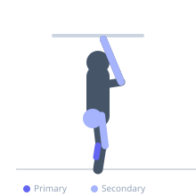
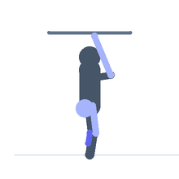

Exercise guide / Jump Rope — Steady State
Jump Rope — Steady State
Steady-state jump rope is a continuous rhythmic cardiovascular exercise that develops coordination, calf strength, and aerobic capacity simultaneously. The repetitive small-amplitude jumps demand rapid and repeated plantarflexion from the gastrocnemius and soleus, while the wrist rotation engages the forearms and the rhythm demands precise coordination between upper and lower body. Jump rope is one of the most calorie-dense and equipment-minimal forms of cardiovascular training available, burning approximately 10–16 calories per minute depending on pace and bodyweight.
Primary muscles
gastrocnemius medial
gastrocnemius lateral
soleus
Secondary muscles
vastus lateralis
gluteus maximus
flexor carpi radialis
Stabilizers
transverse abdominis
erector spinae
Equipment


Starting position
- Stand with feet together on a flat, non-slip surface. Hold the rope handles at hip width, with the rope hanging behind the heels. Stand tall with a slight bend in the knees.
Setup
- Size the rope correctly: step on the middle of the rope and the handles should reach armpit height. Use a jump mat or sprung floor to reduce impact. Wear supportive footwear.
Steps
- Step 1: Hold one handle in each hand with the rope hanging behind. Swing the rope overhead and begin turning the wrists in small circles — the wrists, not the arms, drive the rotation.
- Step 2: As the rope sweeps under the feet, jump just high enough to clear it — 1–2 inches off the ground.
- Step 3: Land softly on the balls of the feet with knees slightly bent. Do not land flat-footed.
- Step 4: Maintain a consistent rhythm. Keep the elbows close to the body and the rope motion driven by wrist rotation.
- Step 5: Continue for the target duration, starting with 30–60 second bouts if new to jump rope.
Coaching cues
- Turn with the wrists, not the arms
- Stay on the balls of your feet
- Think light — imagine the floor is hot
Breathing
- Breathe rhythmically throughout. Nasal breathing at moderate intensity helps regulate pace. At higher intensities, breathe through both nose and mouth.
Range of motion
- Jump height should be just enough to clear the rope — 2–3 cm off the ground. Feet stay close together. Wrist circles are small and fast.
Tempo
- Beginner: 30 seconds on / 30 seconds off × 10. Intermediate steady-state: 5–10 minutes continuous. Advanced: 20–30 minutes continuous at 120–140 RPM.
Common mistakes
- Using large arm swings to turn the rope instead of small wrist rotations — this wastes energy and disrupts rhythm
- Jumping too high, which is exhausting and unnecessary
- Landing heavily on the heels, increasing joint impact
Safety
- Jump on a forgiving surface — avoid concrete without a mat
- Beginners should start with short intervals (30–60 seconds) to allow calf adaptation before longer steady-state sessions
Training
- endurance: 1–10 reps
- endurance: 1–10 sets
- Rest: {'endurance': 30}